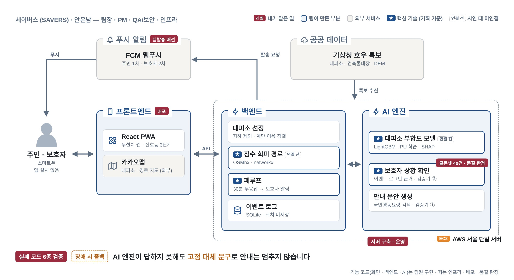

SAVERS · 재난 취약계층 맞춤 대피 안내
고용노동부장관상 · 326팀 중 공동 3위 · ACK 2026 제1저자재난문자는 지역 전체에 같은 내용으로 갑니다. 혼자 판단하고 움직이기 어려운 주민에게 앱 설치나 상시 위치 추적 없이 맞춤 대피 안내를 보내고, 보호자에게는 가족이 대피했는지 알려 주는 PWA입니다.
판단은 코드·설명은 LLM
내가 맡은 일
- 역할
- 팀장 · PM · 평가와 인프라
- 기간
- 2026.07 – 2026.09
- 팀
- 4인 팀 · K-디지털 트레이닝 해커톤 2026
팀 운영
중도 하차한 팀원의 QA와 인프라를 이어받아 역할과 일정을 다시 정하고, 설계 확정 대신 짧은 주기 개발로 전환
평가 코드
보호자 응답 골든셋 40건(답변 35, 거절 5), 적대 회귀 12건, 거절 프로브 34건과 자동 채점 스크립트
인프라 코드
FCM 웹푸시 실발송 연결(PR #214, #215), Vercel과 AWS EC2 배포, 자동 품질 검사 CI
기록과 논문
설계 결정 기록(ADR) 관리, ACK 2026 논문 제1저자 집필과 구두발표
직접 작성한 코드
평가 코드 (apps/ai-engine/eval), FCM 실발송 PR #214, #215
성과
화면

시스템 구조
규칙 코드가 판단하고 LLM은 설명하는 구조

보라색 배지가 제가 맡은 부분입니다. 이미지를 누르면 크게 볼 수 있습니다.
구조 결정
1. 판단은 규칙 코드, LLM은 설명만
왜: LLM이 대피소나 경로를 만들면 환각이 곧 안전 사고가 됩니다.
바꾼 구조: 위험 판정은 기상청과 홍수통제소의 공식 판정을 그대로 쓰고, 대피소와 침수 회피 경로는 OSMnx·NetworkX 규칙 코드가 정합니다. LLM은 정해진 결과를 설명만 하고, 보호자 응답은 이벤트 기록만 근거로 씁니다.
결과: 팀원이 만든 검증기는 답변을 주장 단위로 쪼개 기록과 대조합니다. 저는 이 검증기를 검증하는 평가셋을 만들었고, 통과 기준은 기록에 없는 내용 0건입니다.
2. 답할 때와 거절할 때를 모두 잰다
왜: 근거 일치 지표만 보면 엉뚱한 근거로 답하는 실패가 드러나지 않습니다.
바꾼 구조: 답해야 할 질문 28건과 거절해야 할 대조군 6건으로 거절 프로브를 만들어 양쪽을 따로 쟀습니다.
결과: 불필요한 거절은 1/28로 낮았지만 대조군 6건에는 모두 답했습니다. 원인이 검증기가 아니라 앞단 검색에 있음을 추적하고 재현 방법과 함께 문서로 남겼습니다.
3. 팀원이 빠진 뒤 최소 기능부터
왜: 개발 도중 팀원이 중도 하차해, 남은 4명이 맡은 일을 다시 나눠야 했습니다.
바꾼 구조: 웹푸시 실발송, 침수 회피 경로, 보호자 확인을 먼저 만들고 공공 API 실시간 수집은 대회 이후 과제로 미뤘습니다.
결과: 리뷰를 거친 코드 변경 240여 건을 합쳐 기간 안에 완성했고, 326팀 중 공동 3위로 고용노동부장관상을 받았습니다.
한계
35/35와 12/12는 미리 쓴 정답·오답 문장을 채점에 직접 넣어 잰 값입니다. 거절 프로브를 잴 때 생성기는 근거 문장을 그대로 옮기는 오프라인 스텁이었으므로, 실제 생성 모델을 붙인 뒤 다시 재야 합니다.